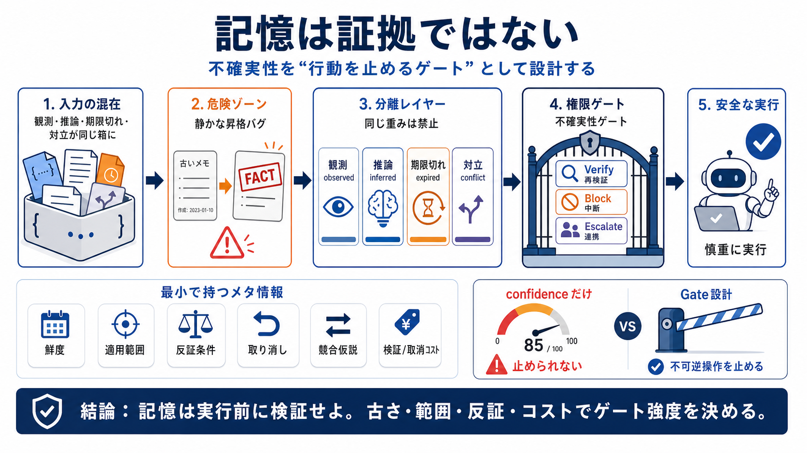

The - Wikipedia
It is the [definite article](//en.wikipedia.org/wiki/Definite_article "Definite article") in English. *The* is the [most…

不確実性はラベルではない
AIエージェントの誤作動は「記憶容量」ではなく、観測・推論・期限切れが同じ重みで扱われる設計に起因します。設計すべきは、実行を止める“権限ゲート”としての不確実性です。
静かな昇格バグ
ツール出力・ユーザー主張・モデル推論・過去のエラーが同一JSON塊に入ると、古い残滓（stale residue）が計画前提（fact）へ“昇格”します。結果として、整った文章ほど危険になります。
同じ重みは禁止
観測（observed）、推論（inferred）、期限切れ（expired）、否定・対立（negation / conflict）を同列に扱わないだけで、誤事実化の確率が下がります。
観測 / Observed 観測・ツール出力
“その瞬間に見えた”事実に近いが、前提は変わり得る。
推論 / Inferred モデルの推測
更新されるべきが、観測と同じ扱いにすると陳腐化する。
期限切れ / Expired 鮮度の限界
TTLが示すのは“古さ”であり“有効性”ではない。
否定・対立 / Conflict 反証の種
競合仮説を捨てると誤収束（premature convergence）する。
AGCの比喩
Apollo Guidance Computer（AGC）の「固定メモリ／書換可能メモリ」にならい、AI側の“記憶の性格”を分離します。固定相当は厳しい根拠が必要、書換相当は更新・取り消し前提です。
不確実性 = 権限
不確実性をスコアで表すだけでは不十分です。必要なのは、再検証を要求し、不可逆アクションをブロックし、無理ならエスカレーションする“構造”です。
境界条件 Gate
実行可能 / 不可能を判定する権限（permission）
再検証 Verify
足りない根拠（provenance / scope /反証条件）を要求
中断・連携 Escalate
不可逆なら止める、必要なら人/別系統へ
最小で効く要素
情報を“事実らしく格納”する代わりに、少なくとも鮮度・適用範囲・反証条件・取り消し・競合・コストを設計に組み込みます。
鮮度 / Freshness expiry
“いつ観測されたか”＋“いまも前提が成り立つか”。
適用可能性 / Scope 適用条件
住宅ローンのように個別条件（DTI等）で成立が変わる。
反証条件 / Falsification
何が揃えば“負け”が確定するか（復活条件も含む）。
リボケーション / Revocation 取り消し
新証拠で信念ランクを格下げ・無効化する状態遷移。
競合仮説 / Runner-up 第2案
捨てると誤収束するため保持し、なぜ負けたかも持つ。
検証/取消コスト cost
verification cost・undo costでゲート強度を決める。
TTLだけでは足りない
タイムスタンプ付き observed でも危険は残ります。市場データや規制要件はイベント駆動で変わり、時間だけのTTLで見逃すことがあるからです。
TTL expire
“古い”ことは分かるが、“前提が今も同じ”とは保証しない。
前提チェック scope/falsify
適用条件・反証条件・更新イベントで有効性を判定する。
スコア vs ゲート
confidenceが高くても“古い観測”や“誤った推論”は起こります。重要なのは、鮮度・スコープ・反証条件・検証ゲートを通過する権限です。
信頼度（confidence）
数値は説得力を持つが、行動の可否を止める仕組みになりにくい。
不確実性ゲート
再検証・中断・エスカレーションへ接続し、不可逆実行を抑止する。
状態遷移で直す
“stale→fact”への静かな昇格を避けるため、状態遷移規則と取り消し伝播を用意します。監視（invalidation）の購読やカバレッジ不足も、epistemicな劣化として扱います。
i 取得 Observe
観測を保存し、鮮度・スコープ根拠を結び付ける。
ii 適用 Scope
成立条件が満たされたときだけ“実行可能”側へ。
iii 取消 Revoke
新証拠/反証で取り消しを伝播し、下位へ遷移。
失敗は伝播する
失敗の大きさは操作の複雑さではなく、誤った信念がどれだけ伝播して参照されたかで決まります。誰が先に参照したかで、取り返しの可否が変わります。
静的な確からしさ
“今の確率”だけを見ると、下流の参照済みを見落とす。
境界（ゲート）× 伝播グラフ
参照先・未参照先を区別し、取り消し可能性を境界に反映。
コストで強度が変わる
住宅ローン価格・規制対応（例：TRID）・ロボット制御・取引の検証では、誤りのコストが極端に大きいほど強制停止が必要になります。低信頼でも最適化が勝つ設計だと、uncertaintyは“助言”ではなく安全装置になります。
結論
AIエージェントの記憶は容量ではなく認識論とゲート設計の問題です。観測・推論・期限切れ・対立を分離し、鮮度・スコープ・反証・取り消し・競合・コストに基づいて“行動を止める”不確実性を作りましょう。
It is the [definite article](//en.wikipedia.org/wiki/Definite_article "Definite article") in English. *The* is the [most…
* [select](https://dictionary.cambridge.org/us/dictionary/english/select?topic=extremely-good "select"). * [hers](ht…
* [the](https://www.dictionary.com/browse/the#hdr-headword-dcom-1)the definite article (used, especially before a noun…
[Video 1](https://www.youtube.com/watch?v=SKZSvtf9D_I). . . * [Word Finder](https://www.merriam-webster.co…